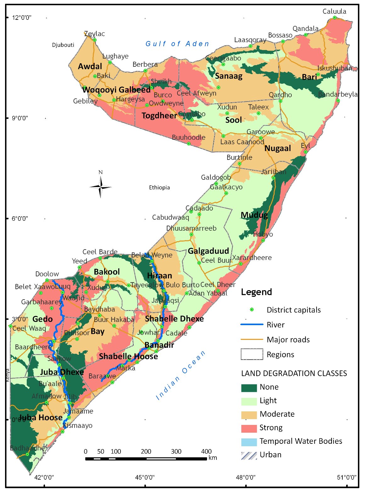
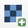
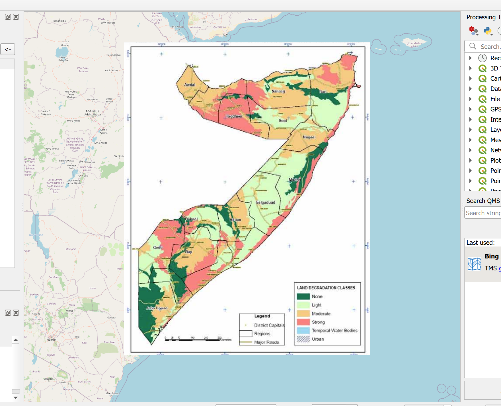
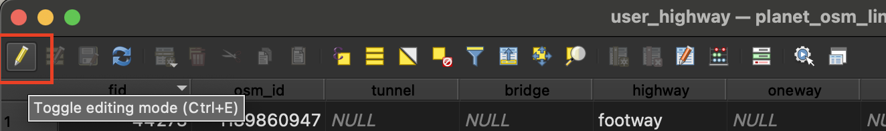

Exercise 7: Georeferencing a map of Somalia#
Aim of the exercise:
The aim of this exercise is to learn how to georeference a map. In many cases, (governmental) institution might only publish data or maps in a pdf format. However, by georeferencing the map, we can import the map as a raster dataset into our QGIS-project. After that, we can either use it to digitise vector features, or use the raster values in raster data analysis.
Type of trainings exercise:
This exercise can be used in online and presence training.
It can be done as a follow-along exercise or individually as a self-study.
These skills are relevant for
Digitising maps
Preparing data for spatial analysis
Estimated time demand for the exercise
~ 90 minutes
Relevant Articles
Instructions for the trainers#
Trainers Corner
Prepare the training
Take the time to familiarise yourself with the exercise and the provided material.
Prepare a white-board. It can be either a physical whiteboard, a flip-chart, or a digital whiteboard (e.g. Miro board) where the participants can add their findings and questions.
Before starting the exercise, make sure everybody has installed QGIS and has downloaded and unzipped the data folder.
Check out How to do trainings? for some general tips on training conduction
Conduct the training
Introduction:
Introduce the idea and aim of the exercise.
Provide the download link and make sure everybody has unzipped the folder before beginning the tasks.
Follow-along:
Show and explain each step yourself at least twice and slow enough so everybody can see what you are doing, and follow along in their own QGIS-project.
Make sure that everybody is following along and doing the steps themselves by periodically asking if anybody needs help or if everybody is still following.
Be open and patient to every question or problem that might come up. Your participants are essentially multitasking by paying attention to your instructions and orienting themselves in their own QGIS-project.
Wrap up:
Leave time for any issues or questions concerning the tasks at the end of the exercise.
Leave some time for open questions.
Step by Step instructions#
Click here to download the datasets for this exercise.
Available Data:
SOM_soil_deg.png- A picture of a soil degradation map of Somalia taken out of a PDF report (Source: FAO SWALIM)som_admbnda_adm1_ocha_20230308.gkpg- A vector layer with the administrative boundaries of the regions (adm1) of somalia (Source: OCHA)
Preparing the data#
Unzip the folder and familiarise yourself with the data by looking at the soil degradation map. The map is located in the
Module_3_Exercise_7_Georeferencing/data/input/-Folder.Create a new QGIS-project.
{kind=link}

Soil degradation in Somalia#
Step 1: Adding a basemap and loading the vector layer#
Georeferencing is done by connecting the points on the map that will be georeferenced to coordinates on your map canvas in QGIS. Adding a basemap or a reference layer to your QGIS project will help you to identify the corresponding coordinates.
Add a basemap using either XYZ-tiles or the QuickMapServices Plugin.
Import the
som_admbnda_adm1_ocha_20230308-layer to the QGIS project.
Step 2: Georeferencing the map#
Now that we prepared our QGIS-project, let’s start georeferencing the map.
Open the Georeferencer by navigating to the Top Bar >
Layer>Georeferencer

Opening the Georeferencer in QGIS 3.36.#
A new window will open. This is the georeferencer. To add an image to georeference, click on

Open Raster.Select the image of the map you want to georeference. Click
Open(Module_3_Exercise_7_Georeferencing/data/input).The image will appear in the middle of the georeferencer window. Click on
Transformation settings....A new window will open. Here you can set the transformation type and the target CRS. For our purpose, we will use the linear transformation type. As the target CRS (Coordinate Reference System), we want to use the same as for our other data. In our case, we can use EPSG:4326. Below, you can set the name and save location of the file. Make sure that the
Load in project when doneis checked.
Click on
Ok.Once you have set the transformation type, you can start adding Ground Control Points (GCP) by clicking on

Add Point. Ground Control Points are points that you ascribe specific geographic coordinates.Click on a point on the map image. This will be the precise location that you can identify on both the basemap and the map you wish you georeference.
Once you clicked on a position, a new window will appear. Here, you add the coordinates to the point you selected. There are two options to do this:
Enter the coordinates manually. You will need to know the exact coordinate. Sometimes, you have a coordinate grid on maps where you can
Select the points
 . This mode will minimize the georeferencer and open the QGIS Map canvas. Zoom to the same location you selected on the non-georeferenced map and Click once.
. This mode will minimize the georeferencer and open the QGIS Map canvas. Zoom to the same location you selected on the non-georeferenced map and Click once.Once the coordinates are entered, click
Ok
The georeferencer window will open again. This time, below the map image, you can see a point in the table. These are the Ground Control Points. Continue adding more GCP. Spread them out over the entire map. Make sure that the
Mean errorin the bottom right corner of the georeferencer window is as low as possible (below 5 is ideal).

Georeferencer dialogue in QGIS 3.36#
Once you have added enough points, click on

Start Georeferencing. QGIS will use the Points you added to transform the image into a georeferenced image, where every pixel has GPS coordinates ascribed to it.You can close the georefencer window. Decide wether you want to save the GPC points in a file. If you are not sure if your georeferencing accuracy was precise enough, save the GPC points so you don’t have to do all the work again.
Congratulations, the georeferenced map will now appear as a raster layer in your QGIS-project
{kind=link}

A georeferenced map of Somalia in the QGIS Map Canvas#
Optional Step 3: Adjusting the transparency of the georeferenced map#
Now that we have the georeferenced map, we can set the transparency so that we can see other layers or the basemap underneath:
Right-Click on the layer of the georeferenced map.
Select
Properties.Navigate to the Transparency tab.
Set the transparency to 50%.
Click on
Apply.
Now we are able to see the underlying layers. We can also check the accuracy of our georeferencing by comparing the lines of the administrative boundaries of both layers.
Optional Step 4: Digitising vector features using the georeferenced map#
Now that we have the map georeferenced, we can use it as a background layer to digitise vector features, such as a polygon indicating a region where the soil degradation is severe.
Create a new shapefile layer (see digitisation). Click on
Layer>Create Layer>Create new Shapefile Layer(You can also choose to create a new Geopackage Layer).A new dialogue window will open. First, we need to specify the save location of the new dataset.
Click on
 to the right of the
to the right of the File Name-field.Navigate to the data output folder (
Module_3_Exercise_7_Georeferencing/data/output).Enter a name for the dataset.
Click
Save.
Set the
Geometry TypetoPolygon.Let’s add a field (column in the attribute table) so we can add information about the soil degradation type:
Under
New field, add a name, for example,soil_deg. We want strangers to be able to identify the type of information stored in that column.Leave the type on String (text).
Click on
Add to field list.
Finish creating the dataset by clicking on
Ok. The layer will be added to your layers-panel.Now, let’s create a new polygon feature:
Select the new layer in the layers-panel.
Activate the editing mode by clicking on

.Click on
 in the digitisation toolbar to create a new polygon.
in the digitisation toolbar to create a new polygon.Start tracing the outline of a field where the soil degradation is severe (in red) by setting multiple points (Left-Click)
Once you are done tracing the outline, finish creating the feature by Right-Clicking.
A new dialogue window will pop up. Here you can enter the attributes for the newly created polygon feature. Under
soil_deg, enter “severe”.Click ok.
Congratulations, we now have digitised a map and digitised vector features we can now use for further analysis!